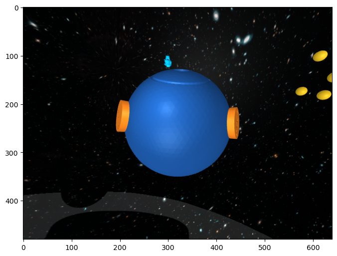
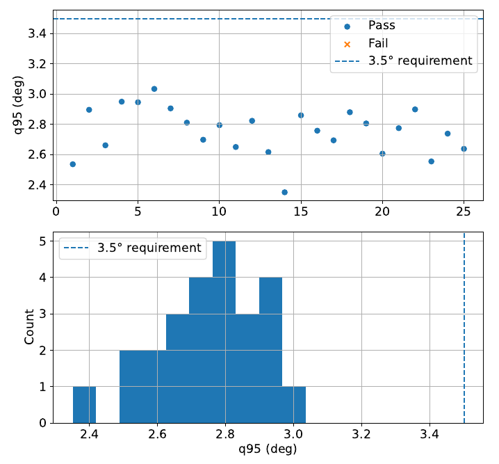

06 / Spacecraft control / Evaluated in simulation
AE353 · Two-person team project
Stabilizing a spacecraft hatch with reaction wheels and a star-based observer
The spacecraft needed to keep its hatch aligned for a returning astronaut while debris disturbed its attitude and noise obscured star measurements. With Adrian Huang, I developed an LQR reaction-wheel controller and a dual-LQR observer. Testing the complete system exposed a useful engineering distinction: the illustrated observer trials met the accuracy threshold, but mission success remained below the required level.
- Team contribution
- Controller and observer modeling, implementation, and testing reported jointly with Adrian Huang
- Tools
- LQR · State estimation · Reaction wheels · PyBullet
- Outcome
- 64% mission success; illustrated observer trials below the 3.5° error limit

Distribute control authority and recover the hidden state
Our team chose a tetrahedral arrangement of four reaction wheels to provide approximately balanced torque authority in three dimensions and distribute the load among actuators. A six-state attitude-and-angular-rate model described the local spacecraft motion.
Seven observed stars supplied fourteen image-plane coordinates, rather than direct measurements of all six states. Linearizing that sensor model and checking rank-six controllability and observability established the basis for feedback and an observer that reconstructs attitude and angular rate from noisy measurements.
Make the observer and controller work together
LQR state and torque weights traded tight attitude regulation against actuator effort. The dual-LQR observer added a second tuning problem: correct disturbance-driven changes quickly enough without following measurement noise too aggressively.
The team first selected a controller using the true state, then added the observer and sensor noise. The report gives roughly 85% success for the best controller-only setting, but that performance did not carry through to the integrated system. This made the interaction between estimation, disturbances, and available wheel torque the central obstacle.
Evaluate estimation and mission completion separately
The report records 64% successful astronaut entries in 200 simulations, below the 80% mission target.
Mission trials lasted 60 seconds and included randomized initial conditions, sensor noise, and debris disturbances. A separate observer criterion used the 95th percentile of attitude-error magnitude over 20–60 seconds, with a 3.5° limit.
All 25 trials illustrated in the report’s observer plot lie below that limit. The report concludes that its observer criterion was met; the figure does not establish the observer pass rate across the full 200-trial mission set. The mission shortfall remains visible alongside the favorable estimation result.


Use the shortfall to guide the next design decision
The report identifies limited reaction-wheel torque, large disturbances, and the difficulty of separating disturbance response from sensor noise as constraints on recovery. It proposes more systematic selection of controller and observer weights instead of relying on trial and error.
This project shows experience integrating an observer with feedback, defining different acceptance measures for estimation and mission behavior, and diagnosing a design that missed its system-level target. The linked notebook contains the wheel layout, state and sensor linearization, gain calculations, state-estimate update, wheel-torque commands, and trial analysis.